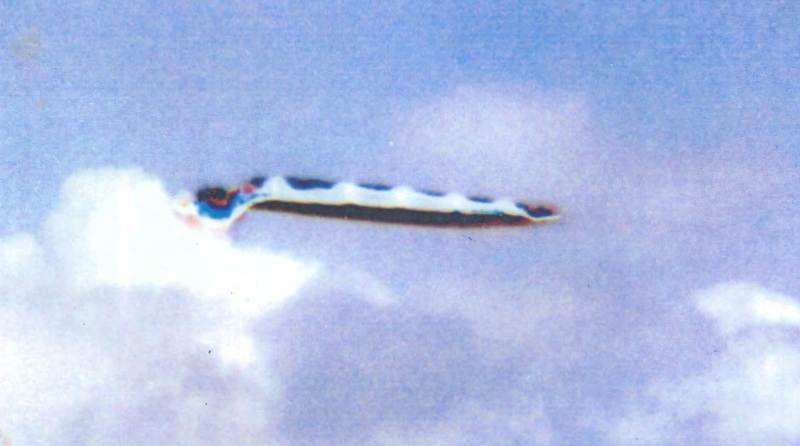
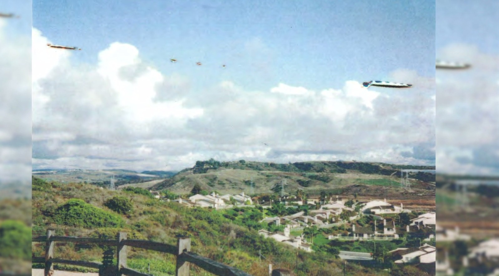
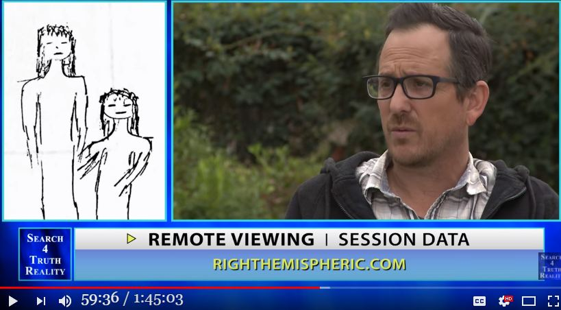

The Identity of William Tompkins' "UFO Photo" (plus the reality of remote viewing)

Update
- (2018-07-08) Completed - (2018-07-01) Added - (2018-06-29) Added (2018-06-26 begin)Preface
- I have seen conclusive evidence that remote viewing is totally unreliable, so I will record it.Video (1:45:03)
・Remote Viewing Psychic Spy John Vivanco - Part 3My opinion
- John Vivanco confidently asserts that this is a real UFO. But you don't need to go through the trouble of remote viewing to find out the identity of this UFO. Unless your eyes are not so blind, you should be able to recognize this UFO at a glance. - The "clear and convincing evidence" for the identity of this UFO is blatantly visible in these photos. It is not just two or three pieces of evidence. Just a quick count reveals nearly 20 pieces of evidence. (2018-06-26 end)
（2018-06-29 begin）Preface
- I saw an interview with William Tompkins explaining this issue, so I will add it to the list. The main contents are as follows - The image of the photo in question. - The origin of this photo. - This UFO is a huge reptilian ET tanker, and this photo shows the scene when the UFO was temporarily made invisible. - And a laundry list of gibberish - The photo below is the same as the above still image, but it is a little clearer. The lower photo is the same as the still image above, but it is a little clearer.Quotation
(2018-06-29 end)MIND CONTROL
Tompkins: I was in a meeting on the subject with some other people, and this one young lady said, “I've got one.” And, “You've got what?” [Whispering] “I've got one.” “Really?” “I have.” “I've got a picture of it.” “UFO?” “Yeah. A real picture of it.” “How'd you get that?” “Well, we were having a party Friday night in Oceanside, and Saturday morning we went - all eight of us - we went to that cul-de-sac off of Lake Boulevard” - it's right over at Carlsbad. Now Carlsbad is next to Oceanside, okay? So they're standing on the border between the two - to show the other three couples their new condo that's being built just across the area. So everybody goes out there, and they're standing around this fence because it dropped off quite a bit and then came back up.So they took the picture, one picture of this whole valley thing - not a picture like that [pointing up like to the sky], but just straight out. And they developed the pictures, all the party pictures the night before, and then this.
You'll notice it's serrated on the sides and it's serrated on the top.  Look what's coming out of the back of it in color - five separate gases coming out of this Reptilian tanker, dropping five gases at 300 feet. You're smoking their gas today, because they drop this gas only on technically advancing communities on the planet, okay, every four to six weeks. So you could be getting it today.  Not one - one, two, three, four, five, six. THEY DIDN'T SEE IT, because everybody's minds are controlled to not see it just like a stealth system. So the commander of this squadron made sure that that stealth was turned on. He forgot to turn on the stealth that prevents a camera from photographing it. Okay? So the reason you don't see these - they're flying all over us. There's hundreds of them. They're thousands of them every single day on your planet. They're dropping the gas. So your mind is being controlled, and you don't function normally or how you should function. And so, again, we are being mind-controlled not for the last couple of weeks but for thousands of years. And back to the Romans again, their minds were controlled. And it's hard for us to accept that somebody's controlling MY MIND, and particularly - now this is extremely important - particularly because the brilliant PhDs in ALL technical fields, these people are most important for everything that we need in science, but their minds have been controlled. ref: https://spherebeingalliance.com/blog/transcript-cosmic-disclosure-remembering-william-tompkins-disrupting-draco-domination.html
(2018-07-01 begin)Preface
- The aforementioned article (the part described on 2018-06-26) should be described in more detail and a cut-out still image should be added.summary
・1:00 The location of the photo in question was agua hedionda Lagoon in Carlsbad California. ・42:36 The photo (below) purportedly showing the UFO was obtained by William Tompkins from a woman he knew.
・45:36 The location of the photo in question was agua hedionda Lagoon in Carlsbad California. ・50:08 この UFO は光学的な幻影などではなく、物理的な実体だ。"physically real" ・51:50 This UFO is not an optical illusion, but a physical entity. "it's real things." ・59:00 Below are the details of the remote viewing of various specific data on this UFO.


・59:30 ET was remotely visible in this UFO.

Video (1:45:03)
・Remote Viewing Psychic Spy John Vivanco - Part 3My opinion
- In the next article, I will illustrate what this UFO is and the "clear and convincing evidence" of its existence. - I did keyword searches and image searches on the Internet, but did not find a single article mentioning the identity of this UFO. This may be due to the fact that my search was cursory, but still.... - How is it possible that the evidence of such blatant positive identification is in the photo and not a single person noticed it...? ...So, no one must have paid any attention to this photo, except for a glimpse and a glance. - But that's a healthy thing, because anyone who would take William Tompkins' nonsense seriously is a bit iffy. (2018-07-01 end) image search
(2018-07-08 begin)Illustration of the identity of this UFO
- First, the following figure shows evidence that this photo was taken from inside a car. - First, note the smudges on the windows. - Second, note the red horizontal line (reflection of the interior of the car) drawn slightly above the center. - Third, note the numerous reflections of the interior of the car, especially in front of the blackish fence. - The original photo is shown below for comparison to the illustration above.- Based on the above, we can conclude that the UFO in question is bird droppings. The "unnatural bending" of the clouds in the figure below could also be a reflection of the interior of the car or dirt on the windows, but it is not clear. - Just to be sure, I started to search for the corresponding landscape on Google Maps. However, I found that it was difficult to narrow down the location, and it would take an enormous amount of time. So I gave up. I'll leave the rest to someone with more free time. (2018-07-08 end)
History
(2018-06-26) Completed (2018-06-29) Added (2018-07-01) Added (2018-07-08) Added
Thanks
- Translated with www.DeepL.com/Translator (free version)
(2022-06-29 translate)
First published article (Japanese)
「William Tompkins の UFO 写真は本物だ」と John Vivanco が遠隔視で断言 →この UFO の正体は…w （全体） (2018-07-08)
Degree of completion of this article: